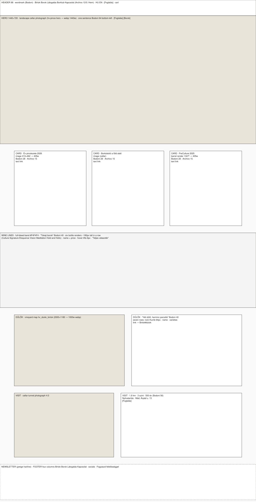
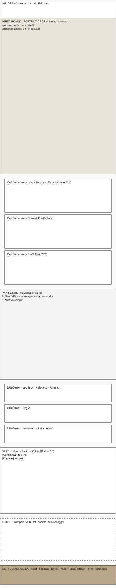

Calvus · Holdvölgy · project documentation
Phase 1 of 00-plan.md, started on the owner's "Go" 2026-09-16 (D10). Per D5 these
are two designed experiences, not one layout reflowed. Each is specified at its
reference size; tablet is resolved as its own state at the end. Nothing here is
coded yet — this document is the thing to approve before the home page is built.
The schematics are generated boxes, not renderings: they fix what is in frame,
in what order, at what size. Colour and type come from assets/tokens.css.
assets/tokens.css: ground #FAFAFA, cards #FFFFFF,
band #F4F4F4, ink #1D1D1B, the one accent #B8A689, hover #8B705B.
Bodoni Moda for the sentence, the headings and the wordmark; Archivo at width
112.5 for everything else. No other colour, no other face.h1 per page. 44 px minimum on every tap target on every device.
Grid: 12 columns, content max 1280, gutter 24, margins 80. Type: hero sentence Bodoni 64, section headings Bodoni 40, card titles Bodoni 28, body Archivo 15, labels Archivo 12 caps at 0.14 em tracking.
hv-pince-hero.jpg,
served as WebP at 1440 w, AVIF where supported), a bottom-left gradient for
legibility, the sentence in white, two buttons: Foglalás solid greige, Borok
outlined white. Not viewport-height: the three cards are visible below the fold
line on a 900-px-tall screen._birtok-413 cards are exactly
this width; the PreCulture barrel render for the third), Bodoni 28 title, two
lines of Archivo 15, a text link. Same edges, same baselines.#F4F4F4, 420 tall. "Tokaji borok" Bodoni 40;
six renders in a row at ~180 px tall — Culture, Signature, Eloquence, Vision,
Meditation, Hold and Hollo — name and from-price beneath; hover lifts the bottle
6 px; "Teljes választék" right-aligned. This is the Penfolds isolated-bottle grid
on Holdvölgy's ground.hv_dulok_birtok.png, 2000 ×
1180, served at 1000 w); right "Hét dűlő, harminc parcella" Bodoni 40 and seven
rows, each a 64-px rock thumbnail, the dűlő name, its varieties. Rows link to the
Birtok page anchors.
Margins 16, single column, type: hero sentence Bodoni 34, headings Bodoni 26, body Archivo 15, labels 12. The page exists so someone can book or buy from the car park at Mád in two taps.
<picture> and media — the desktop landscape is never
scaled down. The sentence at Bodoni 34, one button Foglalás (Borok is in the
bar).tel: link, Foglalás full-width.Desktop section order and two-column layouts; phone navigation (bottom bar and sheet) because the mega-panel needs hover and horizontal room. Cards two-up with the third full-width beneath; the bottle band four across with the remaining two on a second row; map above the dűlő list; visit stacked. Hero uses the landscape crop at 1024 w. Margins 40.
| Asset | Desktop | Phone |
|---|---|---|
| Hero (WebP; AVIF where supported) | 1440 w ≈ 180 KB | 780 w portrait ≈ 90 KB |
| Six bottle renders → WebP with alpha, ≤ 360 px tall | ≈ 6 × 45 = 270 KB | ≈ 6 × 30 = 180 KB (rail, lazy beyond the third) |
| Vineyard map → WebP 1000 w | ≈ 120 KB | not loaded (rows only) |
| Seven rock thumbnails 128 px | ≈ 7 × 8 = 56 KB | 3 × 8 = 24 KB |
| Three card images | ≈ 90 KB | ≈ 45 KB |
| Fonts (two families, Latin-ext subset, swap) | ≈ 120 KB | ≈ 120 KB |
| HTML + CSS | ≈ 40 KB | ≈ 40 KB |
| Total | ≈ 880 KB | ≈ 500 KB |
Both under the 1,5 MB target with margin; measured, not estimated, once built.
From holdvolgy.com/wp-content/uploads/: 2024/04/hv-pince-hero.jpg (521 KB),
2024/04/hv_pincerendszer_pincealagut_lepcsovel_4-3.jpg (101 KB),
2024/07/hv_dulok_birtok.png (180 KB), the seven MVW_HV_kozet_*.png rock files
(~1 MB each, converted to 128-px WebP and the originals discarded), six line renders
(HV_Culture_3D_PALACK, HV_Signature_13, HV_Eloquence_14, HV_Vision_21,
HV_Meditation_23, HH_Dry; ~290 KB each), HV_preculture_hordo_2025.png, two
_birtok-413 cards, and hv-megamenu-logo.svg. Every file is listed with its
source URL in docs/assets-used.md when fetched; converted derivatives live in
holdvolgy/assets/img/, originals are not committed.